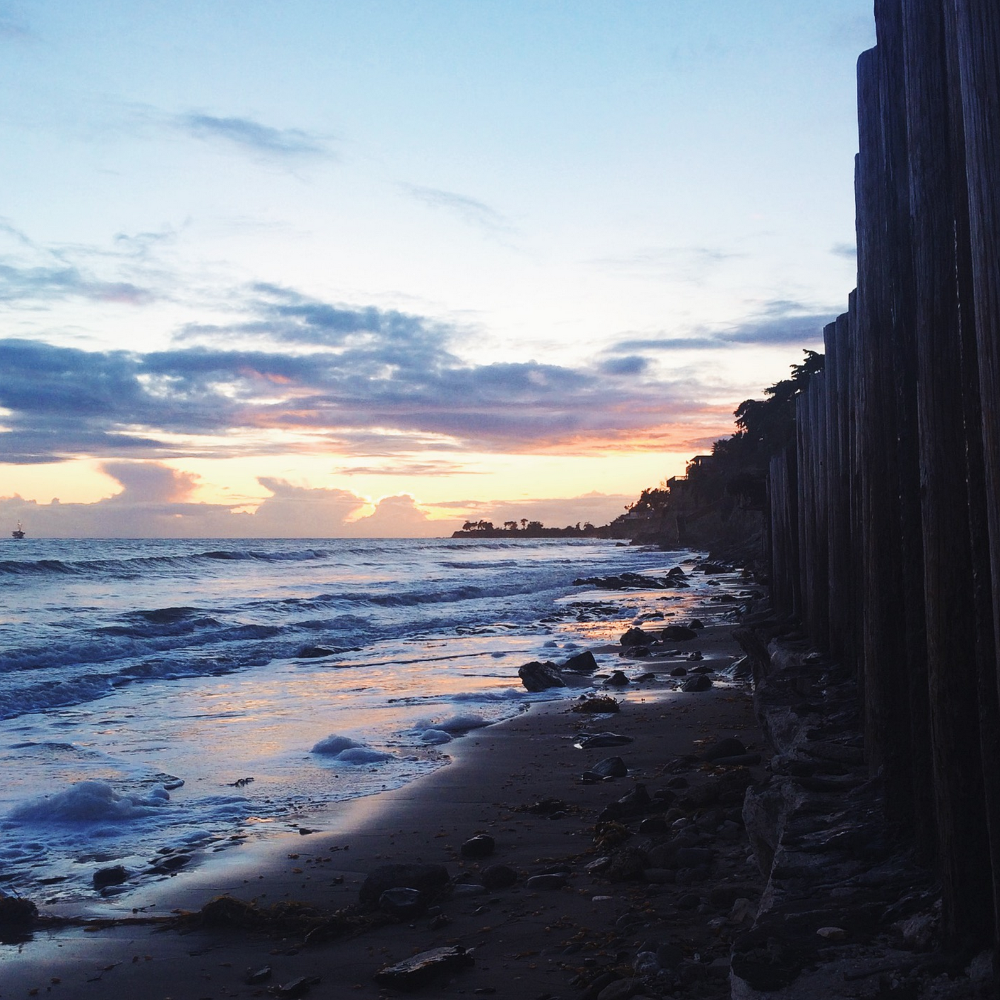
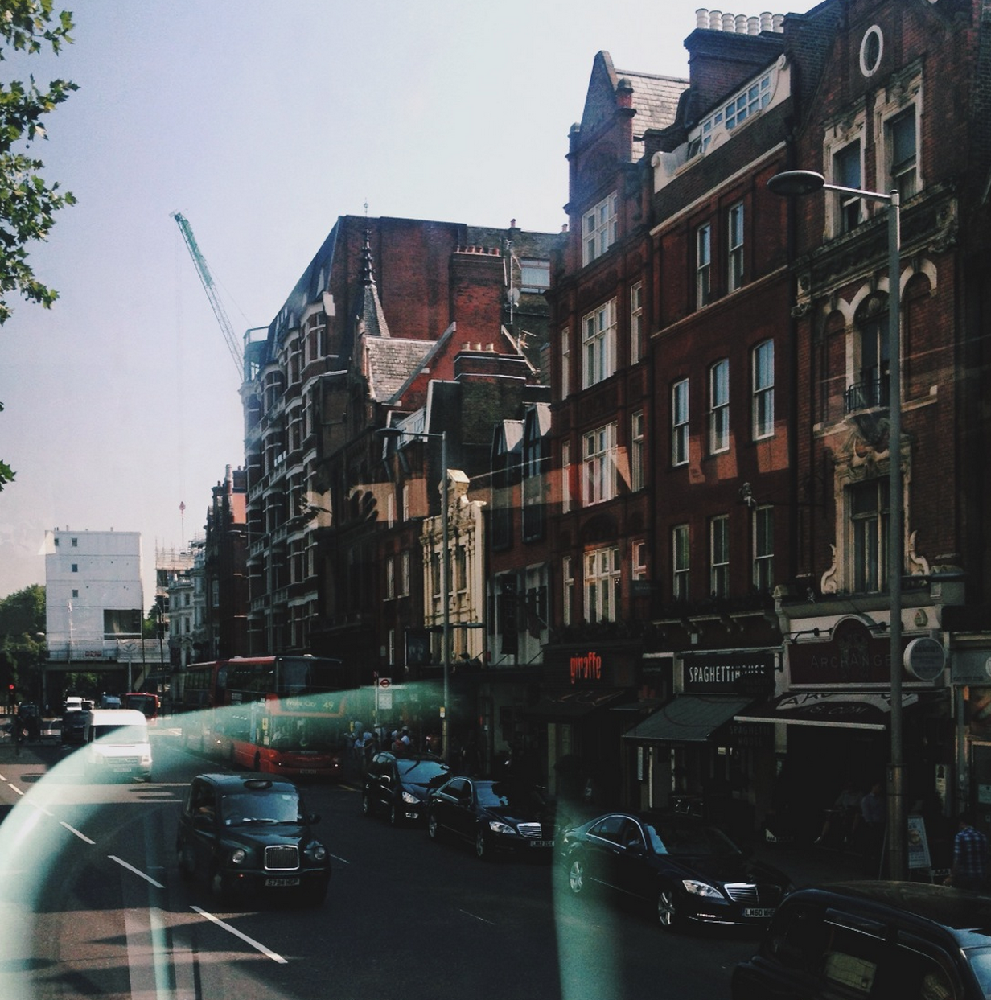
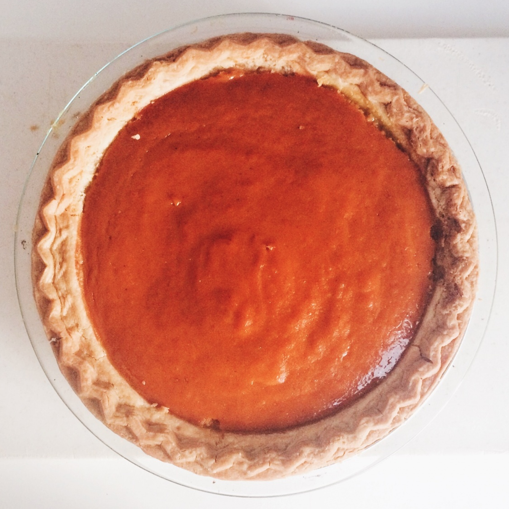
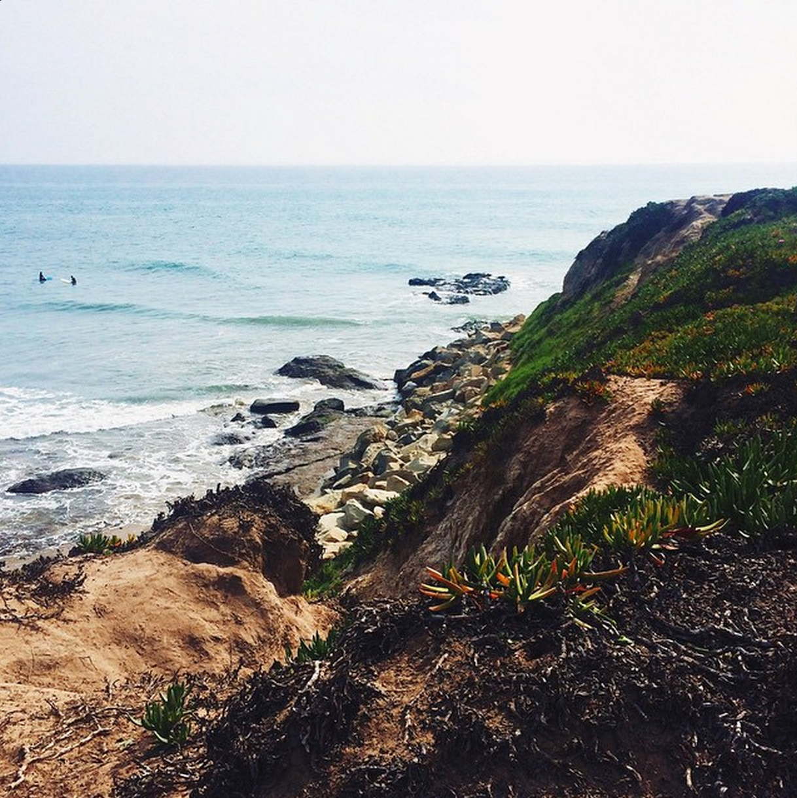
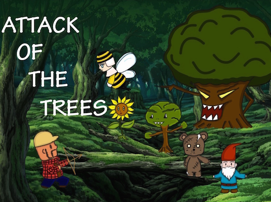

I am currently an undergrad studying Computer Science at UC Santa Barbara.
At UCSB, I am involved in several organizations, including the Society of Women Engineers and Association of Computing Machinery.
Outside of school, I enjoy travelling, photography, and swimming. I also love to cook with my housemates when we have free time.
From September through December 2015, I am spending a semester abroad at the the University of Edinburgh in Scotland.
I will be attending classes here in the UK and travelling around Europe, hoping to see as much as I possibly can. If you'd like to keep up with me, you
can check out my photos here!

Sunset at Sands Beach

Hammersmith Road in London

Friendsgiving Pumpkin Pie

Campus Point
Projects

Attack of the Trees is a single-player, side-view game developed in Java. In the game, the user plays as a lumberjack with the objective
of progressing through the entire game. The game consists of multiple levels where the player must clear the board of all enemies in order to
reach the boss enemy, which must also be defeated.